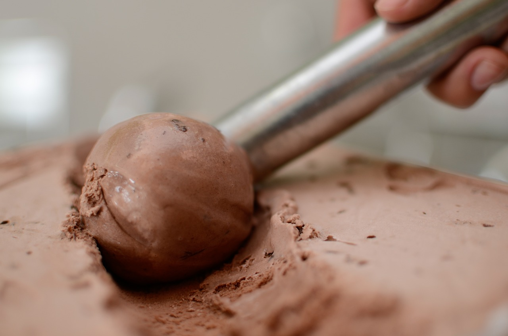
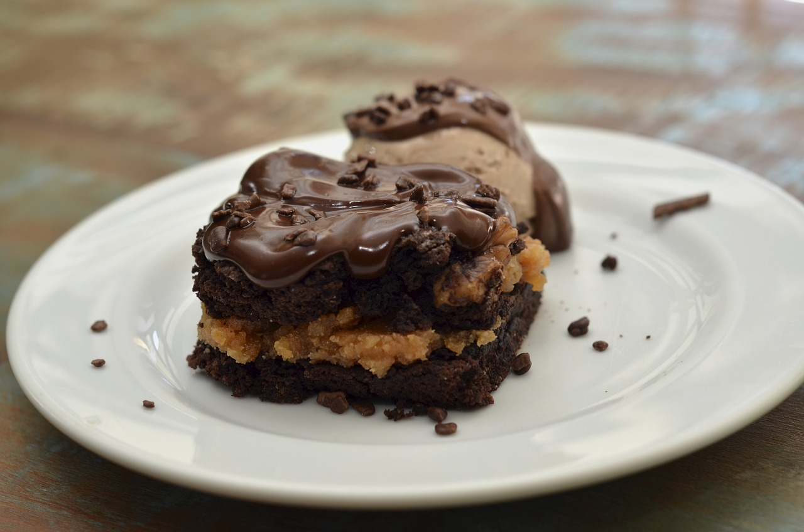
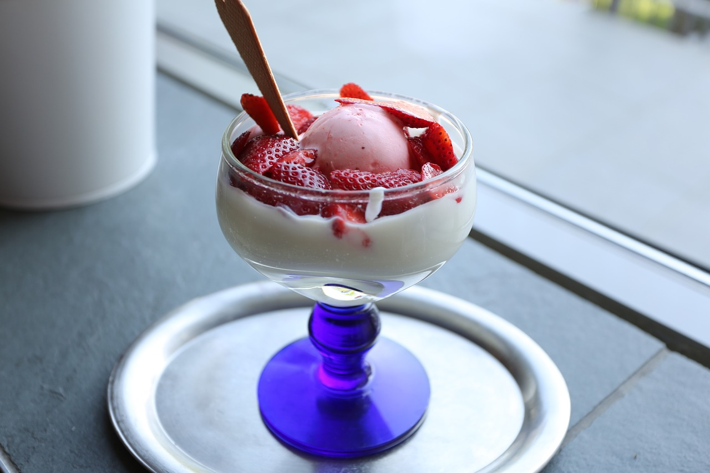

Lo Nuestro
Ofrecemos un menú artesanal preparado con los más selectos ingredientes generando experiencias inolvidables.
-

Helados
Elaborados con las mejores frutas y bases italianas naturales, libres de grasa colorantes y conservantes ofreciendo así la mejor calidad en cada producto
-

Crepes y Panne Cooks
Los más variados y deliciosos crepes y panne coocks con recetas originales y los ingredientes de más alta calidad seleccionados para ti
-

Wafles y Crepes Dulces
Ven y endulza tu vida con la mejor combinación de crepes y wafles acompañados de fruta y helado artesanal italiano.
Heladeria Isrrael
Estamos ubicados en el Galán y Galerías. Somos fabricantes del más rico helado artesanal italiano con recetas originales, ingredientes naturales. Contamos con acogedoras instalaciones para que compartas en familia momentos …
 Restaurante
Restaurante
 Distribucion de Helado
Distribucion de Helado